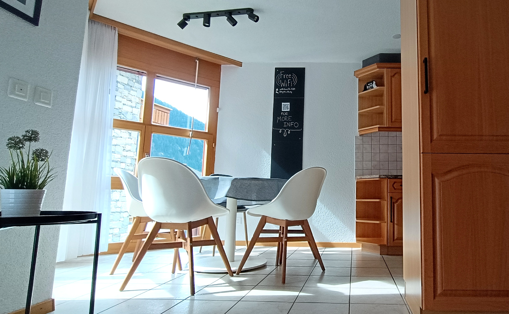
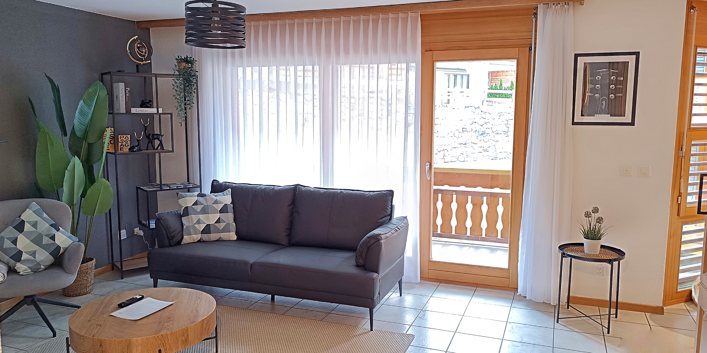
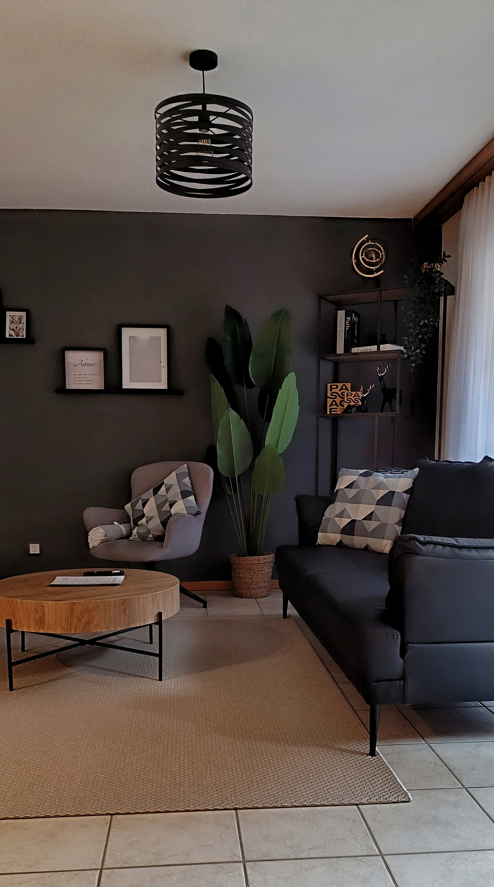
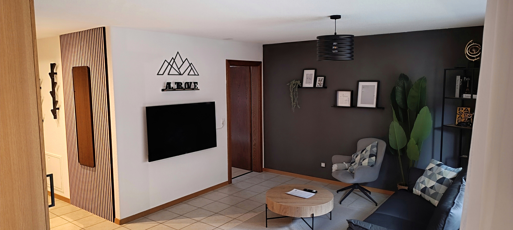
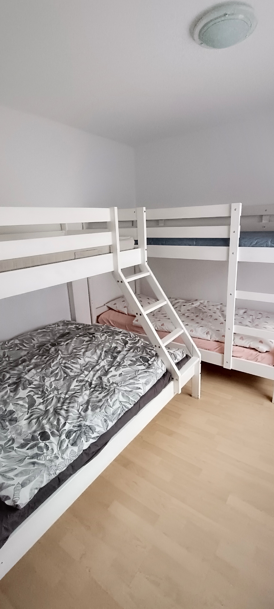
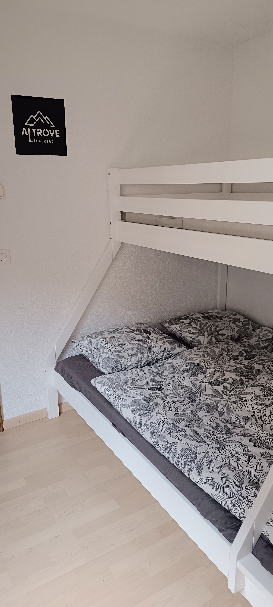
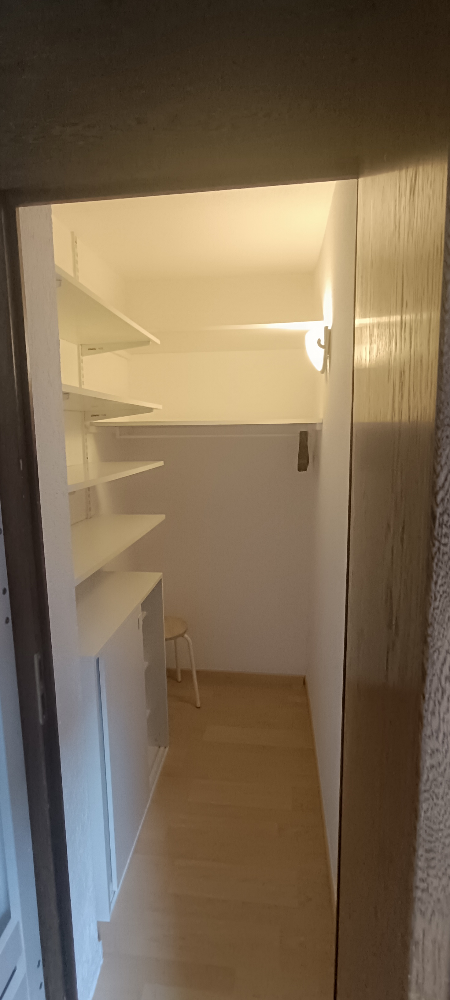
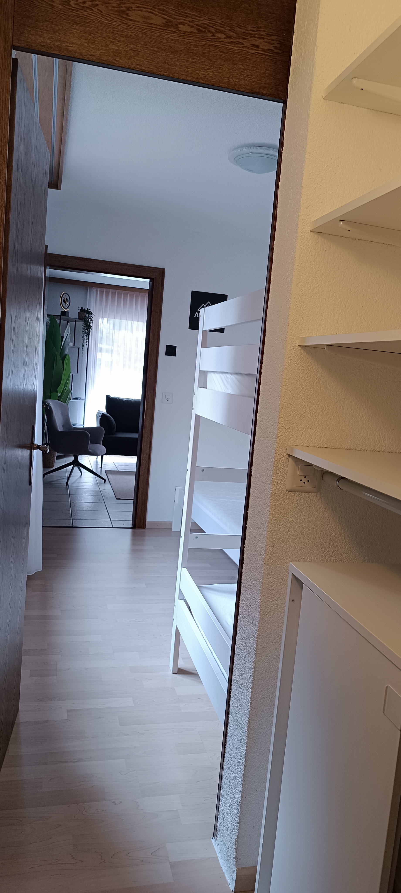
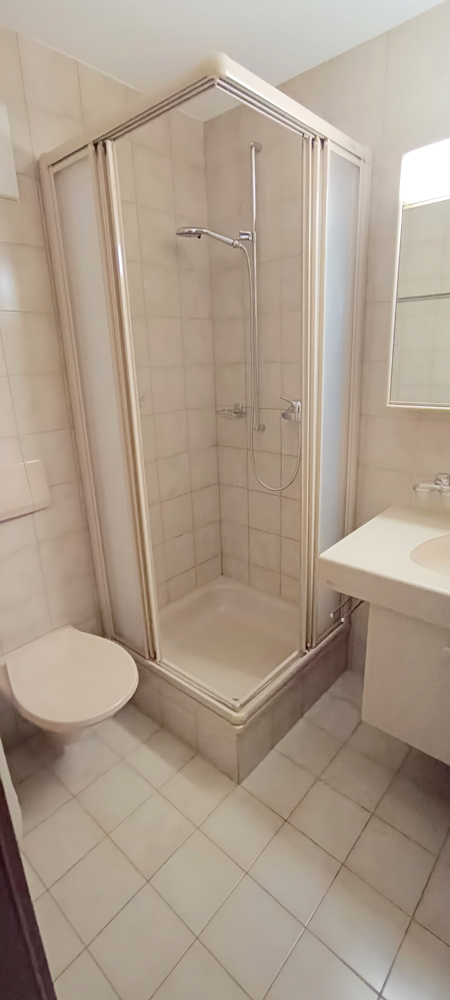

Appartamento ALTROVE
Servizi
- Terrazza
- Ascensore
- Riscaldamento al suolo
- Biancheria da letto
- Biancheria da bagno (asciugamano, telo doccia e tappetino)
- Panno da cucina
- Asciugacapelli
- SmartTV
- Netflix
- Programmi TV
- Wifi
- Zona carico/scarico davanti all'entrata
- Parcheggio coperto presso lo Sportarena
- Guest Card
Attrezzatura cucina
- Cucina open space
- Cucina completa (pentole, padelle, posate,...)
- Lavastoviglie
- Piano cottura
- Frigo
- Congelatore
- Forno
- Bollitore
- Microonde
- Macchina caffè
- Set Raclette
- Set Fondue formaggio
Posizione
- Vista montagne
- Nel cuore di Leukerbad
- Strada secondaria
- Posizione soleggiata e tranquilla
- 500m Ufficio Turismo / Posta
- 500m Stazione dei Bus
- 290m Sportarena / Snowpark
- 354m Gemmi
- 1km Torrent
- 685m Leukerbad Therme
- 540m Walliser Alpentherme&Spa
- 210m Therme 51°
- 500m Supermarket
- 200m fermata bus-Ringjet 481
Accessibilità
- Adatto con bambini
- Adatto per anziani
- Automobile non necessaria
- Vietato fumare
- Animali non ammessi
Servizi sport
- Armadio/deposito sci
- Deposito scarponi
- Vicino a skilift
- Vicino a impianto da sci
- Vicino a Sportarena (palazzetto dello sport)
Benvenuti nel vostro rifugio ideale a Leukerbad!
Questo spazioso appartamento di 2.5 locali (61 m²), che può ospitare da 1 a 5 persone, combina comfort e stile moderno per regalarvi un soggiorno indimenticabile nel cuore delle montagne.
La grande cucina open space è un vero paradiso per gli amanti della convivialità, attrezzata con tutte le comodità: padellino raclette, fondue al formaggio, bollitore, microonde, lavastoviglie e macchina del caffè per iniziare al meglio ogni giornata.
La luminosa sala, con ampie vetrate e un design moderno, si apre su un ampio terrazzo, perfetto per godersi la vista panoramica della vallata e rilassarsi all’aria aperta.
La camera da letto, con cinque posti letto e vestibolo, offre comfort e tranquillità.
Il bagno dispone di una doccia funzionale.
L’appartamento è dotato di connessione WiFi ad alta velocità, accesso a Netflix per i momenti di relax e, al piano cantina, un armadio per depositare gli sci.
Per la vostra comodità, è disponibile un ascensore, la possibilità di carico e scarico direttamente presso l’appartamento e un posteggio coperto presso lo Sportarena.
Un soggiorno perfetto dove la montagna incontra la comodità di casa.